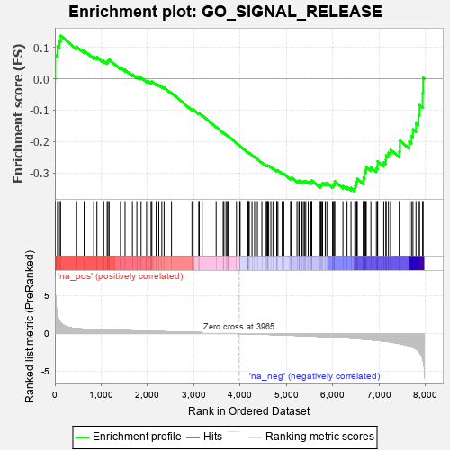
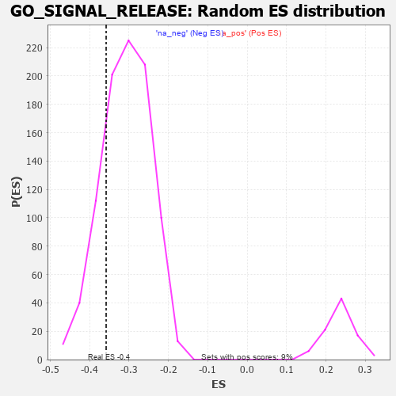

| | | Dataset | 7d |
| Phenotype | NoPhenotypeAvailable |
| Upregulated in class | na_neg |
| GeneSet | GO_SIGNAL_RELEASE |
| Enrichment Score (ES) | -0.35822308 |
| Normalized Enrichment Score (NES) | -1.1653663 |
| Nominal p-value | 0.2032967 |
| FDR q-value | 0.67543304 |
| FWER p-Value | 1.0 |
Table: GSEA Results Summary

Fig 1: Enrichment plot: GO_SIGNAL_RELEASE
Profile of the Running ES Score & Positions of GeneSet Members on the Rank Ordered List
| PROBE | GENE SYMBOL | GENE_TITLE | RANK IN GENE LIST | RANK METRIC SCORE | RUNNING ES | CORE ENRICHMENT | | 1 | SYT2 | | | 8 | 5.577 | 0.0754 | No |
| 2 | MC4R | | | 57 | 2.491 | 0.1034 | No |
| 3 | IRS1 | | | 98 | 1.659 | 0.1210 | No |
| 4 | ADCY8 | | | 124 | 1.418 | 0.1372 | No |
| 5 | LRP1 | | | 470 | 0.648 | 0.1022 | No |
| 6 | GLMN | | | 632 | 0.583 | 0.0896 | No |
| 7 | PORCN | | | 838 | 0.522 | 0.0707 | No |
| 8 | WLS | | | 907 | 0.505 | 0.0689 | No |
| 9 | MEF2C | | | 1054 | 0.473 | 0.0568 | No |
| 10 | SRC | | | 1128 | 0.459 | 0.0538 | No |
| 11 | SNX19 | | | 1146 | 0.454 | 0.0579 | No |
| 12 | RFX3 | | | 1171 | 0.451 | 0.0610 | No |
| 13 | P2RY1 | | | 1416 | 0.407 | 0.0355 | No |
| 14 | INHBB | | | 1514 | 0.388 | 0.0284 | No |
| 15 | BACE1 | | | 1673 | 0.360 | 0.0133 | No |
| 16 | LRP5 | | | 1769 | 0.342 | 0.0058 | No |
| 17 | FMR1 | | | 1816 | 0.334 | 0.0046 | No |
| 18 | SMAD4 | | | 1860 | 0.326 | 0.0035 | No |
| 19 | BRSK2 | | | 1979 | 0.308 | -0.0073 | No |
| 20 | RAF1 | | | 2011 | 0.303 | -0.0071 | No |
| 21 | KCNC2 | | | 2075 | 0.295 | -0.0111 | No |
| 22 | FOXD1 | | | 2093 | 0.292 | -0.0092 | No |
| 23 | SYK | | | 2186 | 0.278 | -0.0171 | No |
| 24 | CREB1 | | | 2243 | 0.269 | -0.0206 | No |
| 25 | REST | | | 2308 | 0.259 | -0.0252 | No |
| 26 | MIF | | | 2357 | 0.252 | -0.0279 | No |
| 27 | TLR1 | | | 2517 | 0.224 | -0.0450 | No |
| 28 | BTK | | | 2958 | 0.156 | -0.0990 | No |
| 29 | ANO1 | | | 2982 | 0.152 | -0.0998 | No |
| 30 | PCSK5 | | | 2983 | 0.152 | -0.0977 | No |
| 31 | AIMP1 | | | 3105 | 0.136 | -0.1113 | No |
| 32 | SYT8 | | | 3115 | 0.135 | -0.1106 | No |
| 33 | PSMD9 | | | 3179 | 0.125 | -0.1169 | No |
| 34 | CDK5 | | | 3480 | 0.080 | -0.1540 | No |
| 35 | ACSL4 | | | 3632 | 0.055 | -0.1725 | No |
| 36 | CCKAR | | | 3648 | 0.051 | -0.1737 | No |
| 37 | DHX9 | | | 3693 | 0.044 | -0.1787 | No |
| 38 | NF1 | | | 3713 | 0.040 | -0.1806 | No |
| 39 | SYT11 | | | 3732 | 0.036 | -0.1824 | No |
| 40 | HTR1B | | | 3745 | 0.035 | -0.1834 | No |
| 41 | IFIH1 | | | 3919 | 0.006 | -0.2054 | No |
| 42 | VPS35 | | | 3989 | -0.006 | -0.2141 | No |
| 43 | DDX58 | | | 3998 | -0.007 | -0.2150 | No |
| 44 | HNF4A | | | 4157 | -0.034 | -0.2346 | No |
| 45 | SYT12 | | | 4172 | -0.037 | -0.2359 | No |
| 46 | SYNJ1 | | | 4173 | -0.038 | -0.2354 | No |
| 47 | PDX1 | | | 4179 | -0.038 | -0.2355 | No |
| 48 | ENY2 | | | 4195 | -0.041 | -0.2369 | No |
| 49 | ARL2 | | | 4254 | -0.050 | -0.2436 | No |
| 50 | SYT17 | | | 4310 | -0.061 | -0.2497 | No |
| 51 | LIN7B | | | 4370 | -0.071 | -0.2563 | No |
| 52 | LRRK2 | | | 4467 | -0.087 | -0.2673 | No |
| 53 | STX2 | | | 4562 | -0.108 | -0.2778 | No |
| 54 | NISCH | | | 4568 | -0.109 | -0.2769 | No |
| 55 | SYT4 | | | 4590 | -0.116 | -0.2780 | No |
| 56 | PNKD | | | 4591 | -0.116 | -0.2764 | No |
| 57 | GATA3 | | | 4614 | -0.120 | -0.2776 | No |
| 58 | ITPR1 | | | 4661 | -0.130 | -0.2817 | No |
| 59 | RAP1B | | | 4706 | -0.140 | -0.2854 | No |
| 60 | MYO5A | | | 4787 | -0.155 | -0.2934 | No |
| 61 | PCLO | | | 4793 | -0.156 | -0.2919 | No |
| 62 | P2RX4 | | | 4813 | -0.161 | -0.2921 | No |
| 63 | VAMP8 | | | 4905 | -0.179 | -0.3013 | No |
| 64 | FZD4 | | | 4940 | -0.186 | -0.3031 | No |
| 65 | DRD2 | | | 5088 | -0.221 | -0.3188 | No |
| 66 | ITSN1 | | | 5094 | -0.222 | -0.3163 | No |
| 67 | DOC2B | | | 5113 | -0.229 | -0.3155 | No |
| 68 | TMF1 | | | 5225 | -0.251 | -0.3262 | No |
| 69 | PICK1 | | | 5265 | -0.263 | -0.3276 | No |
| 70 | RIMS2 | | | 5272 | -0.265 | -0.3247 | No |
| 71 | NPY2R | | | 5331 | -0.281 | -0.3282 | No |
| 72 | ITPR3 | | | 5361 | -0.288 | -0.3280 | No |
| 73 | FZD5 | | | 5386 | -0.292 | -0.3270 | No |
| 74 | KCNC4 | | | 5414 | -0.298 | -0.3264 | No |
| 75 | CPT1A | | | 5467 | -0.311 | -0.3288 | No |
| 76 | TRIM9 | | | 5526 | -0.327 | -0.3317 | No |
| 77 | SIDT2 | | | 5542 | -0.331 | -0.3290 | No |
| 78 | FGFR1 | | | 5543 | -0.332 | -0.3245 | No |
| 79 | DGKI | | | 5725 | -0.384 | -0.3423 | No |
| 80 | ENSA | | | 5739 | -0.388 | -0.3386 | No |
| 81 | TLR2 | | | 5761 | -0.395 | -0.3359 | No |
| 82 | VAMP7 | | | 5777 | -0.399 | -0.3324 | No |
| 83 | SNX4 | | | 5834 | -0.415 | -0.3338 | No |
| 84 | CDK16 | | | 5869 | -0.425 | -0.3323 | No |
| 85 | SYT9 | | | 5992 | -0.469 | -0.3414 | No |
| 86 | PTPRN | | | 6007 | -0.474 | -0.3367 | No |
| 87 | RAC1 | | | 6036 | -0.484 | -0.3337 | No |
| 88 | PPT1 | | | 6038 | -0.485 | -0.3272 | No |
| 89 | SMAD2 | | | 6216 | -0.541 | -0.3423 | No |
| 90 | SYTL4 | | | 6304 | -0.578 | -0.3455 | No |
| 91 | TRPM4 | | | 6390 | -0.612 | -0.3479 | No |
| 92 | SYT15 | | | 6472 | -0.650 | -0.3493 | Yes |
| 93 | DYSF | | | 6481 | -0.654 | -0.3414 | Yes |
| 94 | DPP4 | | | 6501 | -0.663 | -0.3347 | Yes |
| 95 | TRPV4 | | | 6515 | -0.668 | -0.3272 | Yes |
| 96 | VAMP2 | | | 6525 | -0.672 | -0.3192 | Yes |
| 97 | RAB5A | | | 6655 | -0.741 | -0.3254 | Yes |
| 98 | VPS18 | | | 6659 | -0.743 | -0.3156 | Yes |
| 99 | MPC2 | | | 6683 | -0.753 | -0.3082 | Yes |
| 100 | CPLX1 | | | 6684 | -0.753 | -0.2979 | Yes |
| 101 | EGFR | | | 6708 | -0.765 | -0.2904 | Yes |
| 102 | GSK3B | | | 6719 | -0.768 | -0.2811 | Yes |
| 103 | GIPC1 | | | 6819 | -0.826 | -0.2824 | Yes |
| 104 | GHSR | | | 6937 | -0.894 | -0.2851 | Yes |
| 105 | DNM1L | | | 6963 | -0.913 | -0.2758 | Yes |
| 106 | PIM3 | | | 6964 | -0.914 | -0.2632 | Yes |
| 107 | RAB1A | | | 7096 | -0.993 | -0.2663 | Yes |
| 108 | CFTR | | | 7143 | -1.030 | -0.2581 | Yes |
| 109 | SYT1 | | | 7148 | -1.033 | -0.2444 | Yes |
| 110 | OTOF | | | 7198 | -1.069 | -0.2361 | Yes |
| 111 | ABCA1 | | | 7243 | -1.113 | -0.2264 | Yes |
| 112 | KMO | | | 7432 | -1.308 | -0.2324 | Yes |
| 113 | MYRIP | | | 7443 | -1.323 | -0.2156 | Yes |
| 114 | KCNB1 | | | 7444 | -1.327 | -0.1974 | Yes |
| 115 | MCU | | | 7644 | -1.637 | -0.2004 | Yes |
| 116 | ADCY1 | | | 7695 | -1.752 | -0.1827 | Yes |
| 117 | ASIC1 | | | 7726 | -1.838 | -0.1614 | Yes |
| 118 | GRIK5 | | | 7792 | -2.044 | -0.1417 | Yes |
| 119 | GRM4 | | | 7847 | -2.393 | -0.1158 | Yes |
| 120 | CALM3 | | | 7869 | -2.525 | -0.0838 | Yes |
| 121 | ARRB1 | | | 7935 | -3.377 | -0.0459 | Yes |
| 122 | PASK | | | 7946 | -3.674 | 0.0032 | Yes |
Table: GSEA details [plain text format]

Fig 2: GO_SIGNAL_RELEASE: Random ES distribution
Gene set null distribution of ES for GO_SIGNAL_RELEASE